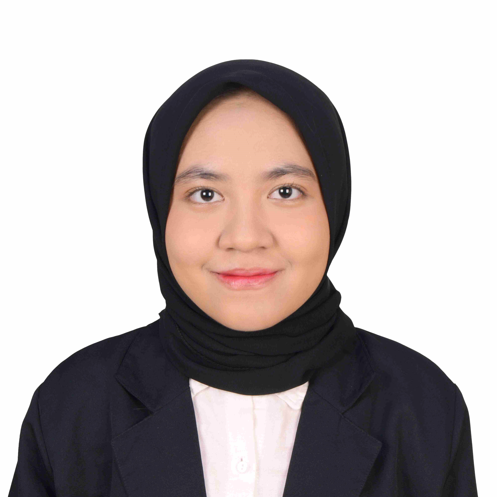

Hasna Farida Ratna Suminar

Summary
A chemical engineering graduate with a broad range of interests. Currently learning web programming and personal care product development.
Education
- Universitas Indonesia: Bachelor's Degree of Chemical Engineering, 2019-2023
Work Experience
- Faculty of Engineering, Universitas Indonesia: Unit Wirausaha dan Inovasi, September 2023 - Present
- Reverse Engineering Project: Research Staff
- Formulated a propolis-infused mouthwash formula through literature review, calculation, production trials, and packaging design.
- Conducted research on bioprinting, including literature review and hands-on experiments, operating a 3D printer, and developing bioink formulations.
- Reverse Engineering Project: Production Staff
- Managed the production of propolis-infused personal care products, including facial wash, body wash, bar soap, shampoo, and toothpaste. Oversaw patent documentation, material preparation, production processes, packaging design, and final packing.
- Collaborated with the Faculty of Dentistry to produce dental varnish, successfully producing over 200 bottles in a four-day period on a laboratory scale.
- Demonstrated dental varnish production procedures to a partner company to ensure proper understanding and replication of the process.
- Biofuel Laboratory Project: Procurement Staff
- Collaborated in a team of three, initiating task discussions and ensuring timely completion of all assigned tasks.
- Drafted proposals, cost estimates, and technical specifications for the procurement of 30 biofuel laboratory equipment and related furnishings.
- Coordinated with over five laboratory equipment vendors to ensure product availability and secured competitive pricing.
- PT Perusahaan Gas Negara: Engineering & Technology Division Internship, June - August 2022
- Conducted a feasibility study for a chemical plant, including literature research, chemical process calculations, material balances, and economic analysis.
- Performed research on process equipment for LCNG (Liquefied Compressed Natural Gas) through a literature review, contributing to the development of the project.
- Executed a chemical plant simulation for PVC production from methane using UniSim software.
Skills
- Skill: Chemistry, Research & Development, Data Analysis, Project Management, Process Engineering, Web Development
- Software: Microsoft Office (Word, PowerPoint, Excel, Visio), Aspen HYSYS, Aspen Plus, AutoCAD
- Language: Bahasa Indonesia (Native), English (Professional Working Proficiency, TOEFL ITP: 637/677)
Certification
Contact Me
{kind=link}
{kind=link}
{kind=link}